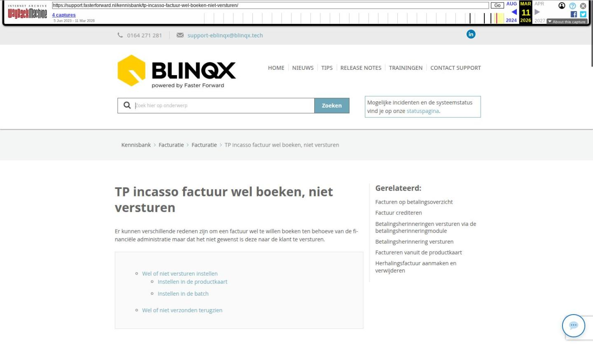

TP incasso factuur wel boeken, niet versturen

Tekstinhoud
TP incasso factuur wel boeken, niet versturen
Er kunnen verschillende redenen zijn om een factuur wel te willen boeken ten behoeve van de financiële administratie maar dat het niet gewenst is deze naar de klant te versturen.
Wel of niet versturen instellen
Instellen in de productkaart
Instellen in de batch
Wel of niet verzonden terugzien
Wel of niet versturen instellen
Op twee verschillende manieren kan je in eBlinqx aangeven dat je niet wenselijk is om de facturen te versturen:
In het linkerdeel van de productkaart van de verzekering
Tijdens het prolongeren via het rekenmachientje
De productkaart gebruik je om de standaardinstelling te kiezen. Het kan gebeuren dat je tijdens het prolongeren een keer wilt afwijken van deze standaardinstelling. Dan kan je dit in de batch aangeven.
Let op: wanneer de batch binnenkomt in eBlinqx dan wordt de verzendwijze van de factuur op dat moment bepaald aan de hand van de instelling die staat in de productkaart. Als een product op dat moment op factuur verzenden ‘Nooit’ staat, wordt dat in de batch onthouden. Het aanpassen in de productkaart heeft dan geen zin meer voor de verwerking van deze batch. Je dient dan het verzenden aan te passen via het rekenmachientje in de batch. Dit moet gebeuren, voordat je de verdere stappen in de batch doorloopt. Wanneer facturen geboekt en aangemaakt zijn, wordt voor het wel of niet verzenden van de factuur gekeken naar wat de batch onthouden heeft.
Instellen in de productkaart
Dit doe je door in het linkerdeel van de productkaart de gewenste manier van factureren aan te geven. Hier kun je voor de optie ‘Nooit’ of ‘Betalingsoverzicht’ kiezen indien de factuur niet naar de klant verzonden dient te worden.
Instellen in de batch
Via ADN verwerk je de prolongaties en mutaties. In de batch in de controlelijst worden posten waarbij ‘Factuur verzenden bij’ op ‘Nooit’ reeds is ingesteld aangegeven met een Stop-teken.
Heb je in de productkaart ‘Factuur verzenden bij’ gekozen voor ‘Betalingsoverzicht’ dan wordt dit in de batch in de controlelijst bij de betreffende posten zichtbaar door middel van een rood papiericoon.
Het kan ook gebeuren dat je normaliter de factuur nooit wilt verzenden, maar deze ene keer wel. Dan kan je via het rekenmachientje in de batch geven dat je deze keer de factuur wilt verzenden.
Indien je tijdens het verwerken van de batch een post tegenkomt waarvan je eenmalig de factuur niet wilt verzenden geef je dit ook door via het rekenmachientje. Klik op het rekenmachientje en geef aan dat er geen factuur verzonden dient te worden. Let op! Er wordt vervolgens via een pop-up gevraagd of je dit door wilt voeren voor alle onderdelen van het pakket kies hier voor ‘Annuleren’ wanneer het alleen de post betreft die je geselecteerd hebt.
Verwerk vervolgens de batch verder zoals je gewend bent door het aanmaken van de boeking en deze om te zetten naar factuur.
Wel of niet verzonden terugzien
Via verschillende manieren is terug te zien of de factuur verzonden is naar de klant, namelijk
In de batch: zoals hierboven beschreven zie je in de batch een stopteken wanneer er in de polis gekozen is voor ‘geen factuur’.
In de boeking: gezien de boeking natuurlijk wel gemaakt wordt, vind je deze terug onder ‘TP incasso boekingen’ in het dossier. Ook daar zie je wederom een stopteken om aan te geven dat deze factuur niet verzonden wordt naar de klant.
In de factuur: desondanks het niet versturen wordt de factuur altijd wél aangemaakt en is deze terug te vinden in het dossier in het tabblad ‘Facturen’. Wanneer de factuur geopend wordt, zie je dat er ‘Nee’ staat achter het kopje ‘Verzenden’.
Laatste update: 15 oktober 2025
Was deze informatie nuttig?
Ja Nee